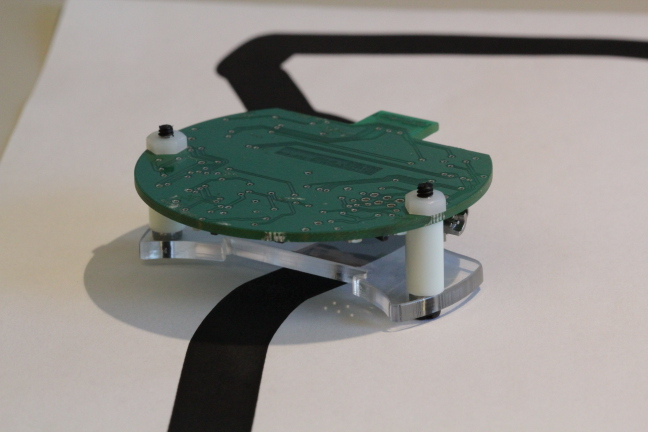

Welcome!
Here you'll find information about AERobot, the simple low-cost robot for introductory programming and robotics education. Use the buttons above or the following links to learn more about building the hardware or buying a pre-made kit, installing the drivers and using the graphical programming environment, sample activities with the robot, or recent announcements.
Be sure to read this page before getting started or if you encounter problems!
*
Seeed Studio is now selling ready-made AERobot kits!
See the news page for information about quantity discounts.
*

Quick overview
AERobot is intended for students around middle school age. No previous robotics or programming experience is required.
A moderate level of comfort with technology is suggested for teachers. AERobot is by design a very simple device, and can be frustrating if you're expecting a polished high-end appliance. Anyone can use it, and you don't need to be programming Arduinos or designing circuits in your spare time, but the less experience you have with hardware, the more time you'll want to spend playing with the robot and going over the documentation before bringing dozens of them into your classroom.
AERobot's features:
- The robot moves using not wheels but instead vibration motors -- like a cell phone that's set to vibrate and slides across a table -- letting it move freely on flat surfaces.
- The robot plugs directly into a computer's USB port for programming and charging. (Windows is currently required; we're working to extend to other operating systems.)
- A collection of infrared sensors and transmitters lets the robot sense the presence of, distance to, and collisions with nearby obstacles; detect and turn toward an external light; and follow a line drawn on the surface underneath it.
- A bright LED lights up in any color.
- The low cost makes it feasible for every student to have, and to personalize, their own robot.
- The hardware and programming environment are open-source.
- A ready-made kit (containing the robot body, a plastic "foot", parts to connect the two, and a rechargeable battery) can be assembled within a couple of minutes by an elementary school student without needing tools.